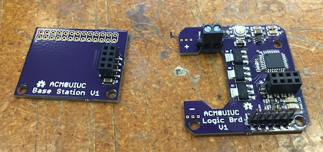

DOCTYPE html
alex_cordonnier
about
I'm a software engineer at Apple and a computer science alumnus of the University of Illinois. I enjoy designing, building, and programming embedded devices. I also enjoy working on theater lighting.
about
projects
grand_piano link="GitHub"
In SIGMusic, I led the design and construction of a giant MIDI piano that we demonstrated at Engineering Open House. It consisted of an octave of plastic keys, each approximately 1 foot by 4 feet, which could be "played" by stepping on them. The notes were sent over MIDI to a computer to be synthesized as part of a Guitar Hero-style game. Each key contained force detection circuitry as well as LED strips to visually indicate the key press.
wireless_lights
wireless_lights link="GitHub"
As a member of SIGMusic, I worked on two versions of a wireless lighting project that have been used in demonstrations at Engineering Open House. The first version, in 2015, used Bluetooth-connected Arduino Pro Minis to control eight RGB LED floodlights. They were managed by a Raspberry Pi running a websocket server written in Python. While this setup mostly worked, we decided to improve it for 2016.
The second version used the same RGB LED floodlights, but with more suitable hardware and software. I designed improved logic boards for the lights and used nRF24L01+ radio modules instead of Bluetooth. OSH Park fabricated all the circuit boards, and then I soldered them by repurposing a toaster oven as a reflow oven. I also wrote a frequency hopping algorithm in addition to a multiprocess websocket server in C++.

wireless_lights
led_clock link="Hackaday.io"
When the mechanical hands on my Star Wars clock broke, I decided to salvage the clock face by replacing the hands with an RGB LED strip. I used an ESP8266, a strip of 60 NeoPixels, and a 3D-printed frame to build a Wi-Fi LED clock. The ESP8266 connects to Wi-Fi, determines its time zone based on the IP address location, and then requests the time via NTP every few hours. I wrote the firmware in C++, including my own geolocation and NTP synchronization libraries.
The photo below was taken at 8:17:06 PM. Blue, green, and red LEDs represent the hour, minute, and second hands respectively (although this is configurable on the webserver's settings page). There are three different display modes: "ticking" hands, "smooth" hands, and progress bar mode. It also has the option of dimming the LEDs between sunset and sunrise, and it uses gamma correction to ensure the brightness appears linear.
led_clock
can_i_take_this_class link="Website"
For our class project for CS 411 (Databases), my group and I made a website called ClassMaster that tracks enrollment statistics in classes at the University of Illinois. The server requests data for every class once per day.
Once the database had enough data to make informed predictions, I added the ability to predict future availability from past semesters. I also rewrote the codebase to make it more secure and maintainable. It is published at canitakethisclass.com.
can_i_take_this_class
midi_show_control link="GitHub"
I developed the firmware for a MIDI control device for a lighting technician on Broadway. The Arduino-based device displays information on the LCD about the MIDI packets being transmitted. The packets can be blocked or passed through by toggling a button.
midi_show_control
mcverilog link="GitHub"
For the BoilerMake fall 2014 hackathon, my team and I developed a Verilog-to-Minecraft "compiler." It takes code written in Verilog (a language that describes how circuits are connected) and generates a representation of the circuit in the popular game Minecraft using redstone logic gates.
mcverilog
dmx-84 link="Hackaday.io"
In February 2013, I started designing a peripheral for my TI-84 graphing calculator that would allow it to run theater lights over the DMX protocol. The idea is that the calculator sends changes in channel values to an Arduino, which processes the new channel value(s) while also transmitting DMX packets 44 times per second. The adapter is designed to be compatible with all calculators that can send data over the standard TI link port, which encompasses nearly all TI graphing calculators. I demonstrated the project at Engineering Open House 2014 using motorized DJ lights.
The project is available on GitHub and Hackaday.io. It was featured on Hackaday on August 3, 2014. Several videos about the project are available on YouTube.

dmx-84
launchpage link="Chrome Web Store"
In August 2011, I began work on an extension for Google Chrome to add a home screen of apps to the new tab page. In the summer of 2012, I finally published version 1.0 of Launchpage. I later published version 1.1, adding the ability to save any website to the home screen. In August 2015, I published version 2.0, making Launchpage follow Material Design principles, and made Launchpage open source.
launchpage
eagle_project link="GitHub"
From March 2011 to March 2012, I designed and led others in building a portable training device as my Eagle Scout project for the Versailles Fire Department. The plans are available on GitHub, and some videos are available on YouTube.
eagle_project
projects
developer_skills
I have a wide array of skills in computing, ranging from web development to systems/embedded programming and hardware design:
- Systems: C, C++
- Scripting: Python
- Web frontend: HTML, CSS, JavaScript, jQuery
- Web backend: PHP
- Databases: MySQL
- Assembly: MIPS, Z80
- Version control: Git, SVN, TFS
- HDL: Verilog
- EDA: EAGLE
- Varying experience with many other technologies
developer_skills
experience
software_engineer at="Apple"
titleCore OS Engineertitle
timeJuly 2017 to presenttime
description Bring up new embedded devices and platforms, including iPhone, iPad, Apple Watch, and others
description
software_engineer
intern at="Apple"
titleCore OS Interntitle
timeMay 2016 to August 2016time
description I developed significant portions of the secure boot ROM for a new SoC architecture.
description
intern
intern at="Apple"
titleCore OS Interntitle
timeMay 2015 to August 2015time
description I ported a software DMA coprocessor to run on an off-the-shelf RTOS instead of its original firmware.
description
intern
course_assistant at="University of Illinois"
titleCourse Assistant, CS 233title
timeJanuary 2015 to May 2017time
description In the Computer Architecture course in spring 2015, I taught three lab sections, helped write the semester's SPIMbot competition, proctored and graded the midterm exam, and held office hours.
SPIMbot is a competition where students program MIPS assembly for a simulated robot to execute. The spring 2015 competition involved solving word searches to acquire energy and collect stardust to grow their planet bigger than their opponent's. I primarily wrote the memory-mapped I/O interface and puzzle solution checker.
In fall 2015, I taught three lab sections, held office hours, and proctored the midterm exam.
In spring 2016, I taught two lab sections, assisted with a discussion section, and held office hours.
In fall 2016, I taught one lab section and held office hours.
In spring 2017, I taught two lab sections, held office hours, and proctored the final exam.
description
course_assistant
intern at="Midmark"
titleWeb Development Interntitle
timeSeptember 2014 to January 2015time
description I developed a web app for the Medical division to replace the current color selector. Link: Medical Design Tool
description
intern
co-op at="Midmark"
titleSoftware Engineering Co-optitle
timeMay 2014 to August 2014time
description I worked as an embedded software developer, programming microcontrollers in C for products such as medical procedure chairs.
Accomplishments:
- Developed initialization & hardware interface code for a new PC board
- Fixed longstanding bugs and refactored code in USB interface board
- Wrote unit tests and test protocols to verify new software releases
- Wrote documentation for a complex product collaboratively with a subsidiary
- Created macros to automatically update SharePoint, saving 7 person-hours per year
description
co-op
intern at="Midmark"
titleE-Marketing Interntitle
timeMay 2013 to May 2014time
description I worked on several web development projects ranging in size.
Accomplishments:
- Developed HTML5 versions of 3 Flash color selectors, including deep mobile integration. Links: Medical, Dental, and Animal Health
- Developed new color selector from scratch, especially for use at tradeshows
- Developed HTML5 versions of 3 interactive Flash banners for mobile support. Link: midmarkanimalhealth.com
- Made media-rich promotional website available offline for sales representatives' tablets. Link: midmarkclinicalsolutions.com
description
intern
experience
education
undergrad at="University of Illinois"
degreeBachelor of Science in Computer Sciencedegree
timeAugust 2013 to May 2017time
GPA3.66GPA
thesisAn Investigation of Close-Range Localization using Bluetooth Low Energythesis
honors
- James Scholar
- Dean's List: Spring '14, Fall '14, Spring '16, Fall '16, Spring '17
honors
selected_coursework
- Operating Systems Design
- Embedded Systems
- Communication Networks
- Wireless Networks
- Computer Security
- User Interface Design
- Virtual Reality
selected_coursework
undergrad
education
résumé
Want my résumé? Just print this page if you're on a modern browser. You can also download the PDF.
Want my résumé? Download the PDF.
résumé
connect